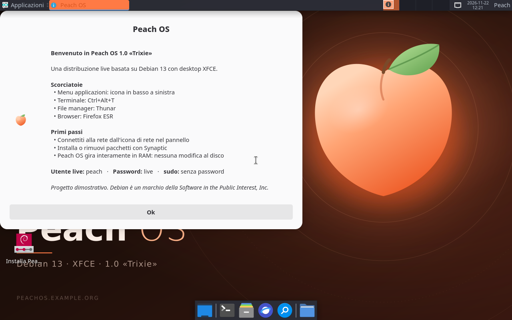
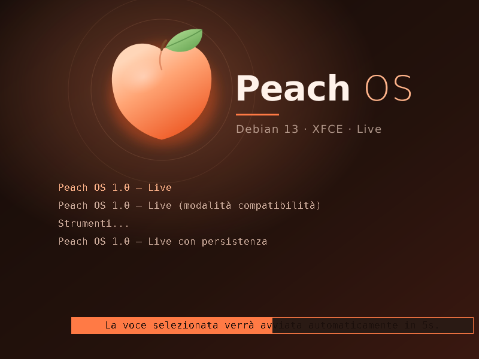
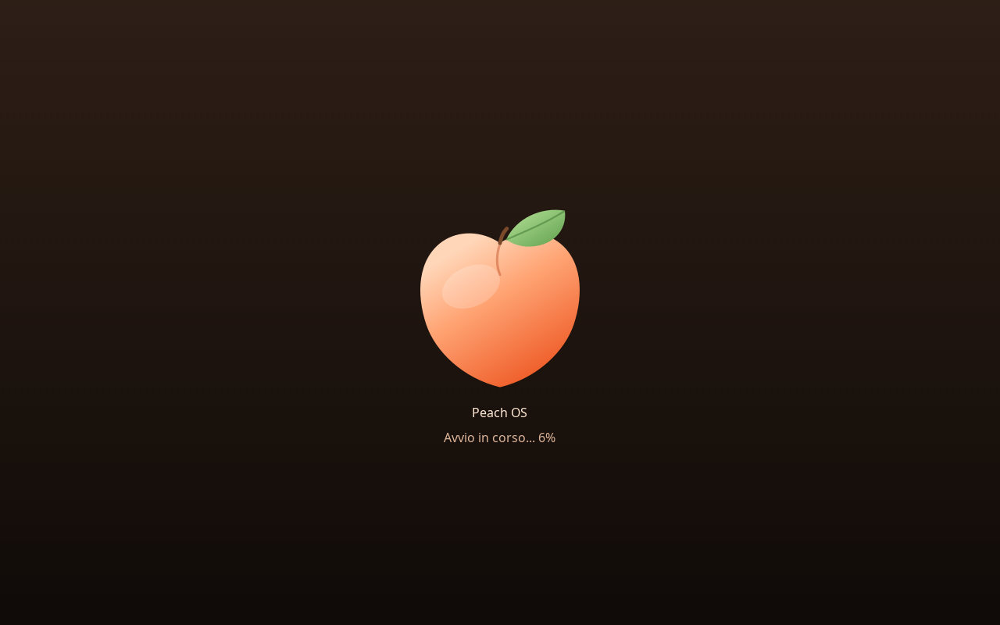

Due desktop
XFCE 4.20 è la sessione predefinita; KDE Plasma è installato e selezionabile dal menu di LightDM. Tema pesca coerente su GTK 2/3/4, XFWM e Plasma.
Debian 13 “Trixie” · kernel 6.12
Peach OS unisce XFCE e KDE Plasma a un installatore grafico, alla persistenza e a una catena di avvio firmata. Si avvia da USB, funziona in BIOS e UEFI e si aggiorna direttamente da Debian.

La ISO è un sistema live completo: 113 pacchetti selezionati, firmware
liberi e non liberi inclusi, locale it_IT.UTF-8, tastiera
italiana e fuso Europe/Rome. L'utente live è
peach con password live e sudo senza password.
Non pubblichiamo la ISO come release: il progetto distribuisce i sorgenti e uno script che ricostruisce l'immagine in un chroot Debian 13. Il risultato è una ISO ibrida di circa 2,2 GB, avviabile sia da BIOS sia da UEFI.
XFCE 4.20 è la sessione predefinita; KDE Plasma è installato e selezionabile dal menu di LightDM. Tema pesca coerente su GTK 2/3/4, XFWM e Plasma.
Calamares con branding Peach OS: lingua, tastiera, partizionamento, utente e bootloader. Rimuove i pacchetti live e configura i repository Debian sul sistema installato.
Una voce dedicata del menu avvia con persistence: basta
una partizione etichettata persistence con un file
persistence.conf per conservare le modifiche.
SELinux con policy Debian in modalità permissive e firewall ufw configurato “nega in ingresso, consenti in uscita”, con interfaccia grafica gufw.
GRUB ibrido con tema e splash Peach, supporto mouse su BIOS, countdown tradotto e shim/GRUB firmati per Secure Boot. Plymouth mostra il logo e l'avanzamento dell'avvio.
Nessun archivio proprietario: apt update e
apt full-upgrade usano trixie, trixie-security e
trixie-updates. Lo strumento “Aggiorna Peach OS” li esegue in
un terminale.


| Componente | Minimo | Consigliato |
|---|---|---|
| CPU | x86-64 a 1 GHz | dual-core o superiore |
| RAM | 2 GB in live | 4 GB o più |
| Chiavetta USB | 4 GB | 8 GB+ per la persistenza |
| Disco (installazione) | 15 GB | 25 GB+ |
| Video | VESA / UEFI GOP, 1024×768 | 1920×1080 |
| Firmware | BIOS o UEFI | UEFI con Secure Boot |
git clone https://github.com/artiombilash9-ctrl/peach-os.gitsudo ./build.sh --full; su Windows, build.ps1 prepara il chroot WSL.dd if=dist/PeachOS-1.0-amd64.iso of=/dev/sdX bs=4M status=progress — controlla due volte il nome del dispositivo.La documentazione completa, le opzioni di build e la struttura del progetto sono nel README.